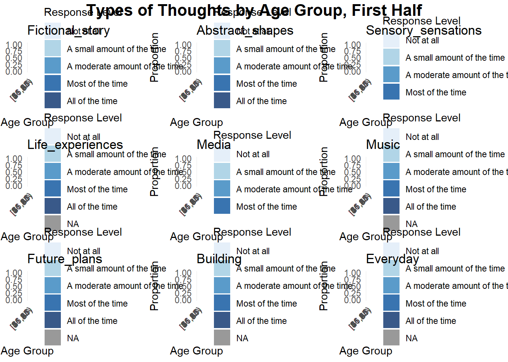
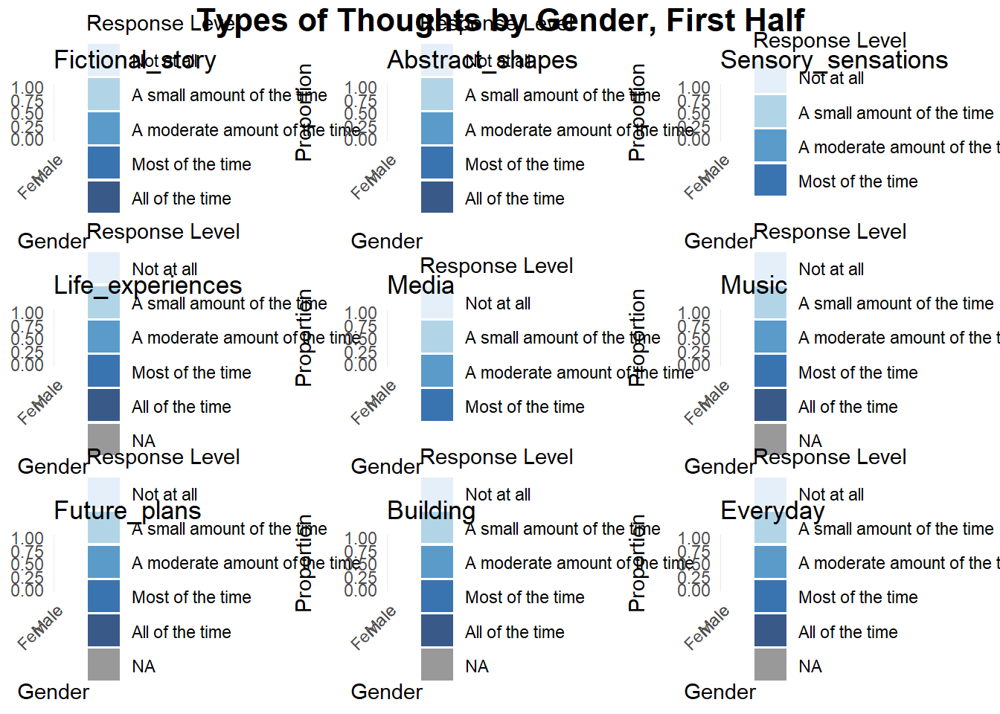
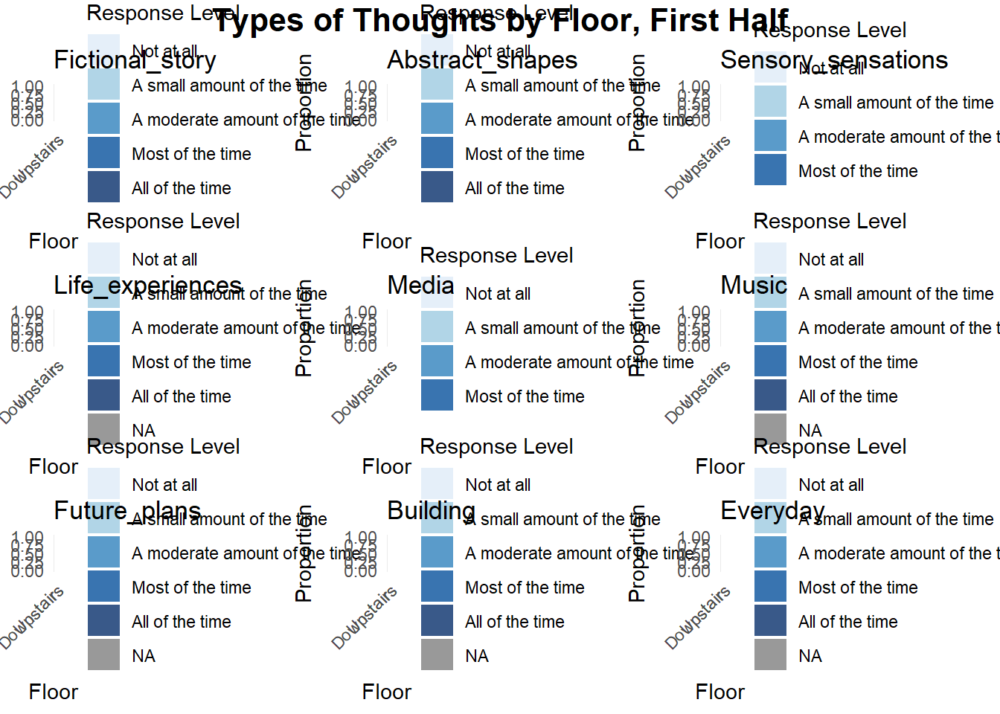
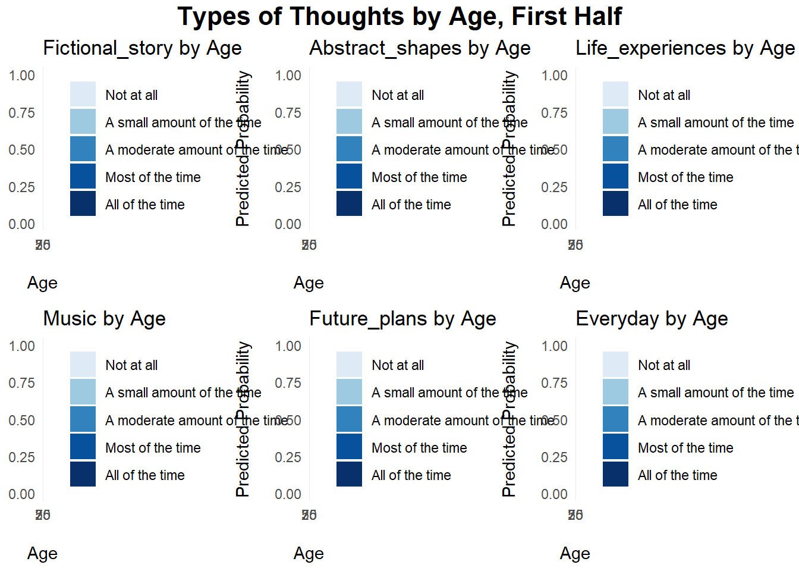
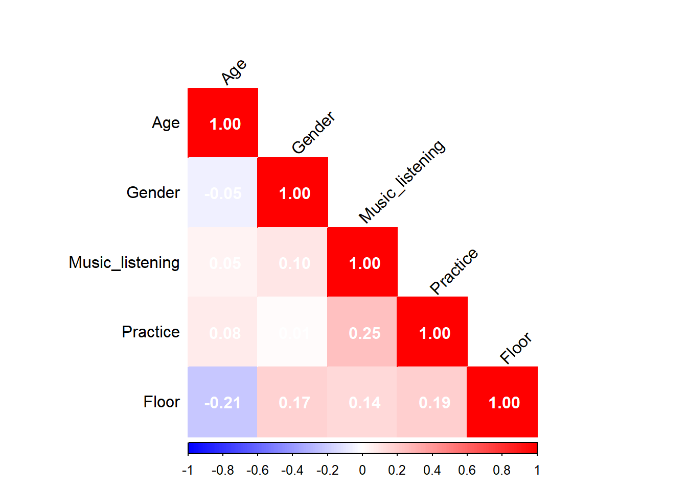
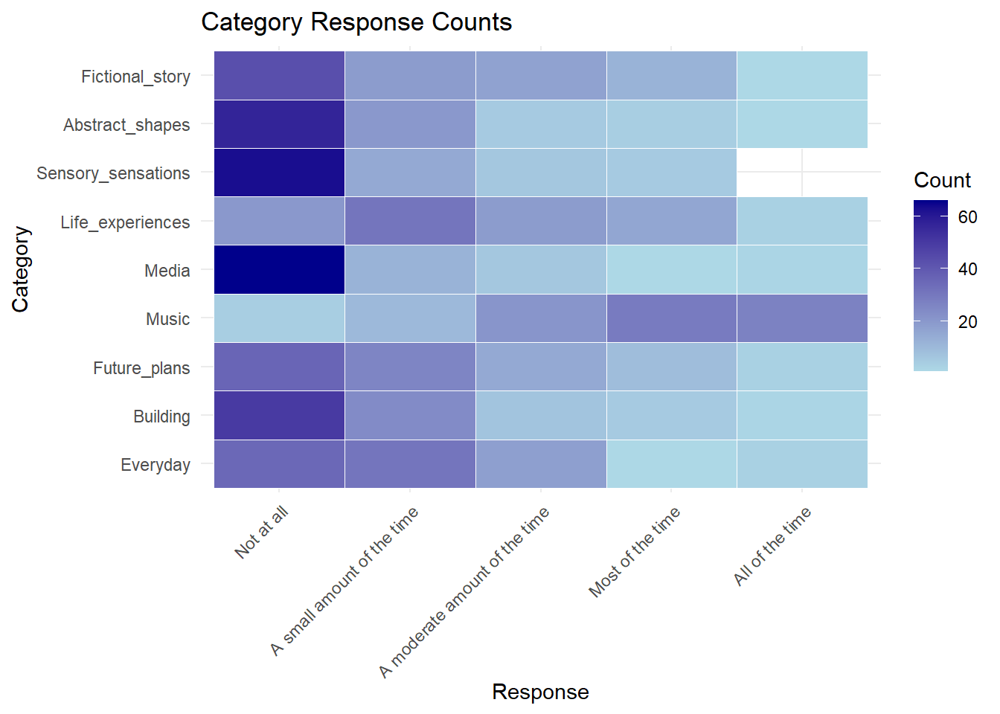
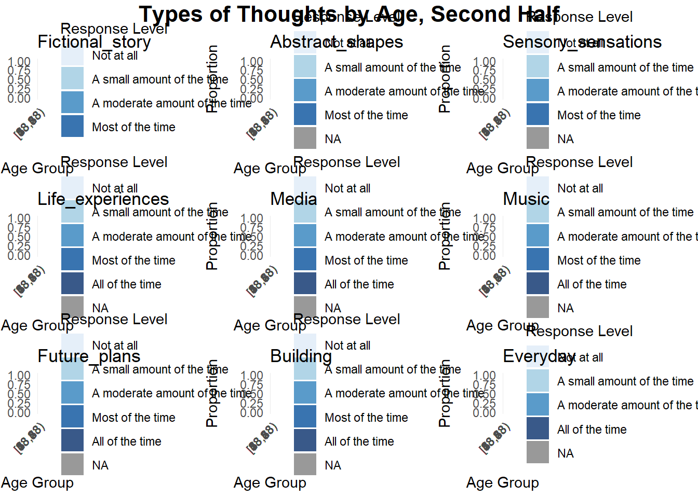
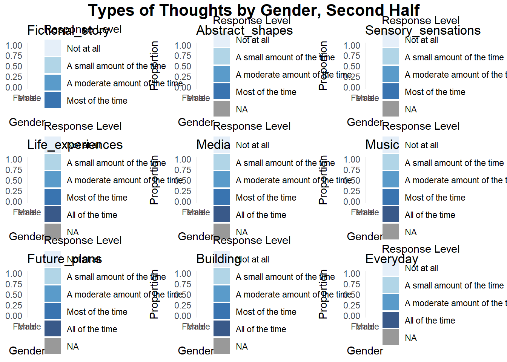
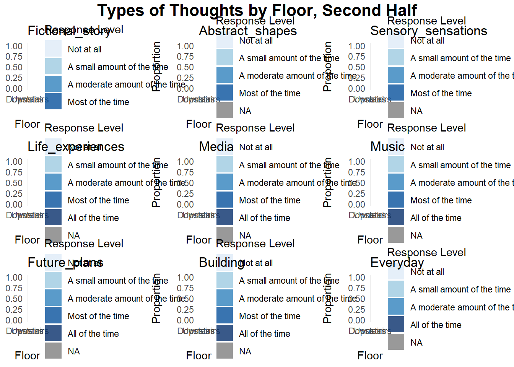
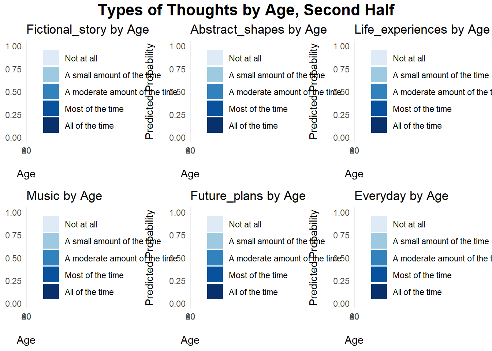

knitr::opts_chunk$set(warning=FALSE, message=FALSE)PUC Analysis code
#Part 1 ##Descriptive 1
library(tidyverse)
library(broom)
library(performance)
library(ordinal)
library(car)
library(ggeffects)
library(gofcat)
library(brms)
library(emmeans)
library(knitr)
library(dplyr)
library(ggplot2)
library(tidyr)
library(gridExtra)
library(grid)
library(MASS)
library(reshape2)
library(reshape)
library(logistf)
library(corrplot)First we load the data for the first half of the concert, removing columns we don’t want. I’ve also recoded the hall locations into two factors, ‘Downstairs’ and ‘Upstairs’.
#Loading dataset, sheet 1
library(conflicted)
conflict_prefer("filter", "dplyr")
data_paper <- read_csv("input/PUC1.csv")First we need to recode some of the values in the dataframe.
recode <- c("1" = "Not at all",
"2" = "A small amount of the time",
"3" = "A moderate amount of the time",
"4" = "Most of the time",
"5" = "All of the time")
recode2 <- c("1" = "Not at all",
"2" = "Slightly",
"3" = "Moderately",
"4" = "Mostly",
"5" = "Entirely")
recode3 <- c("1" = "Very rarely",
"2" = "Somewhat rarely",
"3" = "Moderately frequently",
"4" = "Frequently",
"5" = "Very frequently")
data_paper[, 2:10] <- lapply(data_paper[, 2:10], function(x) recode[as.character(x)])
data_paper[, 13:15] <- lapply(data_paper[, 13:15], function(x) recode2[as.character(x)])
data_paper[, 18:20] <- lapply(data_paper[, 18:20], function(x) recode2[as.character(x)])
data_paper[, 24] <- lapply(data_paper[, 24], function(x) recode3[as.character(x)])Then we load the qualtrics data.
library(conflicted)
conflict_prefer("filter", "dplyr")
data_qualtrics <- read_csv("input_qualtrics/PUC1.csv")
data_qualtrics <- data_qualtrics %>% dplyr::filter(Finished == "TRUE") %>%
dplyr::select(-StartDate, -EndDate, -Status, -Progress, -Duration,
-RecordedDate, -DistributionChannel, -UserLanguage, -Finished, -Q1, -ResponseId)The way people select composer and movements is different for the two surveys so we need to get them in a matching format:
composer_initials <- data.frame(
composer = c("Beethoven", "Hough"),
composer_initial = c("B", "H")
)
data_long <- data_qualtrics %>%
pivot_longer(
cols = starts_with("Movement"),
names_to = "source_col",
values_to = "movement_label"
) %>%
filter(!is.na(movement_label)) %>%
mutate(
composer = case_when(
str_detect(source_col, "_B_") ~ "Beethoven",
str_detect(source_col, "_H_") ~ "Hough"
),
type = case_when(
str_detect(source_col, "_mem$") ~ "mem",
str_detect(source_col, "_story$") ~ "story"
),
movement = as.integer(str_extract(movement_label, "\\d+"))
) %>%
left_join(composer_initials, by = "composer") %>%
mutate(code = paste0(composer_initial, movement))
data_wide <- data_long %>%
dplyr::select(ID, type, code) %>%
pivot_wider(
names_from = type,
values_from = code,
names_prefix = "Movement_"
)
final_qualtrics <- data_qualtrics %>%
left_join(data_wide, by = "ID")# Combine the data frames
data <- bind_rows(data_paper, final_qualtrics)
data <- data%>% dplyr::select(-Movement_H_story, -Movement_B_story, -Piece_story, -Movement_H_mem, -Movement_B_mem, -Piece_mem)A dataframe is created showing thought types in a long format with counts for each frequency.
thought_types <- c("Fictional_story", "Abstract_shapes", "Sensory_sensations", "Life_experiences", "Media", "Music", "Future_plans", "Building", "Everyday")
thoughts_long <- data %>%
pivot_longer(cols = thought_types,
names_to = "Category",
values_to = "Response") %>%
count(Category, Response) %>%
mutate(Response = factor(Response,
levels = c("Not at all",
"A small amount of the time",
"A moderate amount of the time",
"Most of the time",
"All of the time"))) %>%
mutate(Category = factor(Category, levels = rev(c("Fictional_story",
"Abstract_shapes",
"Sensory_sensations",
"Life_experiences",
"Media",
"Music",
"Future_plans",
"Building",
"Everyday")))) %>% filter(!is.na(Response))This dataframe is used for the first plot, which shows the counts for each type of thought during the first half.
ggplot(thoughts_long, aes(x = Response, y = Category, fill = n)) +
geom_tile(color = "white") + # Add white borders to tiles
scale_fill_gradient(low = "lightblue", high = "darkblue") + # Adjust color gradient
labs(title = "Counts for Thought Types, First Half", x = NULL, y = NULL, fill = "Count") +
theme_minimal() +
theme(axis.text.x = element_text(angle = 45, hjust = 1)) # Rotate x-axis labels
ggsave("Plots/Descriptive/Overall thought counts, part1.png", width = 7, height = 5, dpi = 300, bg = "white")Then we examine the counts for the movements people select as invoking the most vivid memory or story.
mems <- data$Movement_mem %>% na.omit() %>% toupper()
stories <- data$Movement_story %>% na.omit() %>% toupper()
# Split values by ";", ",", or whitespace
split_values_mem <- unlist(strsplit(mems, "[; ,]+"))
split_values_story <- unlist(strsplit(stories, "[; ,]+"))
# Trim whitespace
split_values_mem <- trimws(split_values_mem)
split_values_story <- trimws(split_values_story)
# Count occurrences
value_counts_mem <- table(split_values_mem)
value_counts_story <- table(split_values_story)The movement counts are then plotted.
#Reorder the Movement factor levels for Beethoven and Hough
recode_map <- c("B1" = "Beethoven, Movement 1 — Allegro con brio",
"B2" = "Beethoven, Movement 2 — Adagio affettuoso ed appassionato",
"B3" = "Beethoven, Movement 3 — Scherzo",
"B4" = "Beethoven, Movement 4 — Allegro",
"H1" = "Hough, Movement 1 — Au boulevard",
"H2" = "Hough, Movement 2 — Au parc",
"H3" = "Hough, Movement 3 — À l'hôtel",
"H4" = "Hough, Movement 4 — Au théâtre",
"H5" = "Hough, Movement 5 — À l'église",
"H6" = "Hough, Movement 6 — Au marché")
# Recode values to descriptive names using recode_map
recoded_mem <- dplyr::recode(split_values_mem, !!!recode_map)
recoded_story <- dplyr::recode(split_values_story, !!!recode_map)
# Convert recoded values to data frames
df_mem_counts <- as.data.frame(table(recoded_mem))
colnames(df_mem_counts) <- c("Movement", "count")
df_story_counts <- as.data.frame(table(recoded_story))
colnames(df_story_counts) <- c("Movement", "count")
# Add a Composer column (Beethoven for B1-B4, Hough for H1-H6)
df_mem_counts$Composer <- ifelse(grepl("^Beethoven", df_mem_counts$Movement), "Beethoven", "Hough")
df_story_counts$Composer <- ifelse(grepl("^Beethoven", df_story_counts$Movement), "Beethoven", "Hough")
# Set movement factor levels for proper ordering
df_mem_counts$Movement <- factor(df_mem_counts$Movement, levels = recode_map)
df_story_counts$Movement <- factor(df_story_counts$Movement, levels = recode_map)
# Plot for 'memories'
mem_plot <- ggplot(df_mem_counts, aes(x = Movement, y = count, fill = Movement)) +
geom_bar(stat = "identity", position = "dodge") +
facet_wrap(~ Composer, scales = "free_x") + # Separate Beethoven & Hough
theme_minimal() +
labs(title = "Movement Counts for Memories", x = "Movement", y = "Count") +
theme(axis.title.x = element_blank(), # Remove x-axis title
axis.text.x = element_blank(), # Remove x-axis labels
axis.ticks.x = element_blank()) +
scale_fill_brewer(palette = "Set3") +
guides(fill = guide_legend(title = "Movement")) +
scale_y_continuous(breaks = scales::breaks_pretty(n = 5))
ggsave("Plots/Descriptive/Movement counts for memories, part 1.png", plot = mem_plot, width = 7, height = 5, dpi = 300, bg = 'white')
knitr::include_graphics("Plots/Descriptive/Movement counts for memories, part 1.png")
# Plot for 'stories'
story_plot <- ggplot(df_story_counts, aes(x = Movement, y = count, fill = Movement)) +
geom_bar(stat = "identity", position = "dodge") +
facet_wrap(~ Composer, scales = "free_x") + # Separate Beethoven & Hough
theme_minimal() +
labs(title = "Movement Counts for Stories", x = "Movement", y = "Count") +
theme(axis.title.x = element_blank(), # Remove x-axis title
axis.text.x = element_blank(), # Remove x-axis labels
axis.ticks.x = element_blank()) +
scale_fill_brewer(palette = "Set3") +
guides(fill = guide_legend(title = "Movement")) +
scale_y_continuous(breaks = scales::breaks_pretty(n = 5))
ggsave("Plots/Descriptive/Movement counts for stories, part 1.png", plot = story_plot, width = 7, height = 5, dpi = 300, bg = 'white')
knitr::include_graphics("Plots/Descriptive/Movement counts for stories, part 1.png")
In the next descriptive phase, we want to look at how demographics variables are associated with different types of thoughts. First, we tidy the demographics data and make sure it’s classed in the right way.
#Creating a 'floor' variable, with 2 factors showing downstairs and upstairs locations.
data <- data %>%
mutate(Floor = ifelse(Location %in% c("A", "B", "C", "D", "E", "F"), "Downstairs", "Upstairs")) %>% relocate(Floor, .after = Location)
#Removing NA.s?
data <- data %>%
filter(!is.na(Age) & !is.na(Gender) & !is.na(Music_listening) & !is.na(Floor) & !is.na(Fictional_story) & !is.na(Practice)) %>%
filter(!is.infinite(Age) & !is.infinite(Gender) & !is.infinite(Music_listening) &
!is.infinite(Floor) & !is.infinite(Fictional_story) & !is.infinite(Practice))
#Making sure demographic variables are classed in the right way.
data$Age <- as.numeric(data$Age)
data$Practice <- as.numeric(as.character(data$Practice))
data$Gender <- factor(data$Gender, levels = c('Male', 'Female', 'Other'))
data$Music_listening <- factor(data$Music_listening, levels = c('Very rarely', 'Somewhat rarely', 'Moderately frequently', 'Frequently', 'Very frequently'))
data$Floor <- factor(data$Floor, levels = c('Downstairs', 'Upstairs'))
data$Fictional_story <- factor(data$Fictional_story,
levels = c("Not at all", "A small amount of the time",
"A moderate amount of the time",
"Most of the time", "All of the time"))Various descriptive plots can be made, but there are 3 below for age, gender and floor.
- Descriptive plot for Age and types of thought – age is converted into a grouped variable:
# Create Age bins
data <- data %>%
mutate(Age_group = cut(Age,
breaks = seq(floor(min(Age, na.rm = TRUE)),
ceiling(max(Age, na.rm = TRUE)) + 20, by = 5),
include.lowest = TRUE,
right = FALSE))
# List of outcome variables
outcome_vars <- c("Fictional_story", "Abstract_shapes", "Sensory_sensations",
"Life_experiences", "Media", "Music", "Future_plans",
"Building", "Everyday")
# Converting outcome variables to factors with consistent levels for each thought type
data[outcome_vars] <- lapply(data[outcome_vars], factor,
levels = c("Not at all", "A small amount of the time",
"A moderate amount of the time", "Most of the time",
"All of the time"))
# Creating a single summary_data dataframe
summary_data <- data %>%
pivot_longer(cols = all_of(outcome_vars), names_to = "Outcome", values_to = "Response") %>%
group_by(Age_group, Outcome, Response) %>%
summarise(count = n(), .groups = "drop") %>%
group_by(Age_group, Outcome) %>%
mutate(prop = count / sum(count)) %>%
ungroup()
# Looping through each outcome variable to generate plots
plot_list <- list()
for (outcome in outcome_vars) {
plot_data <- summary_data %>% filter(Outcome == outcome)
plot <- ggplot(plot_data, aes(x = Age_group, y = prop, fill = Response)) +
geom_bar(stat = "identity", position = "stack", alpha = 0.8) +
labs(x = "\nAge Group", y = "Proportion\n", title = paste(outcome)) +
scale_fill_manual(name = "Response Level",
values = setNames(c("#deebf7", "#9ecae1", "#3182bd", "#08519c", "#08306b"),
levels(data[[outcome]]))) +
theme_minimal() +
theme(axis.text.x = element_text(angle = 45, hjust = 1))
plot_list[[outcome]] <- plot
}
# Arranging plots in a grid and saving
title_grob <- textGrob("Types of Thoughts by Age Group, First Half", gp = gpar(fontsize = 16, fontface = "bold"))
Age_thoughts_grid <- invisible(grid.arrange(
grobs = plot_list,
ncol = 3,
top = title_grob
))
ggsave("Plots/Descriptive/Age and thoughts, part 1.png", plot = Age_thoughts_grid, width = 20, height = 12, dpi = 300, bg = 'white')
knitr::include_graphics("Plots/Descriptive/Age and thoughts, part 1.png")
- Descriptive plot for gender and types of thought – for now gender has been filtered for male and female.
# Remove missing values + filter
data <- data %>%
filter(!is.na(Gender)) %>% filter(Gender != 'Other')
# Create a single summary_data dataframe
summary_data <- data %>%
pivot_longer(cols = all_of(outcome_vars), names_to = "Outcome", values_to = "Response") %>%
group_by(Gender, Outcome, Response) %>%
summarise(count = n(), .groups = "drop") %>%
group_by(Gender, Outcome) %>%
mutate(prop = count / sum(count)) %>%
ungroup()
# Looping through each outcome variable to generate plots
plot_list <- list()
for (outcome in outcome_vars) {
plot_data <- summary_data %>% filter(Outcome == outcome)
plot <- ggplot(plot_data, aes(x = Gender, y = prop, fill = Response)) +
geom_bar(stat = "identity", position = "stack", alpha = 0.8) +
labs(x = "\nGender", y = "Proportion\n", title = paste(outcome)) +
scale_fill_manual(name = "Response Level",
values = setNames(c("#deebf7", "#9ecae1", "#3182bd", "#08519c", "#08306b"),
levels(data[[outcome]]))) +
theme_minimal() +
theme(axis.text.x = element_text(angle = 45, hjust = 1))
plot_list[[outcome]] <- plot
}
title_grob <- textGrob("Types of Thoughts by Gender, First Half", gp = gpar(fontsize = 16, fontface = "bold"))
Gender_thoughts_grid <- grid.arrange(
grobs = plot_list,
ncol = 3,
top = title_grob
)
ggsave("Plots/Descriptive/Gender and thoughts, part 1.png", plot = Gender_thoughts_grid, width = 20, height = 12, dpi = 300, bg = 'white')
knitr::include_graphics("Plots/Descriptive/Gender and thoughts, part 1.png")
- Descriptive plot for floor
# Remove missing values
data <- data %>%
filter(!is.na(Floor))
# Create a single summary_data dataframe
summary_data <- data %>%
pivot_longer(cols = all_of(outcome_vars), names_to = "Outcome", values_to = "Response") %>%
group_by(Floor, Outcome, Response) %>%
summarise(count = n(), .groups = "drop") %>%
group_by(Floor, Outcome) %>%
mutate(prop = count / sum(count)) %>%
ungroup()
# Looping through each outcome variable to generate plots
plot_list <- list()
for (outcome in outcome_vars) {
plot_data <- summary_data %>% filter(Outcome == outcome)
plot <- ggplot(plot_data, aes(x = Floor, y = prop, fill = Response)) +
geom_bar(stat = "identity", position = "stack", alpha = 0.8) +
labs(x = "\nFloor", y = "Proportion\n", title = paste(outcome)) +
scale_fill_manual(name = "Response Level",
values = setNames(c("#deebf7", "#9ecae1", "#3182bd", "#08519c", "#08306b"),
levels(data[[outcome]]))) +
theme_minimal() +
theme(axis.text.x = element_text(angle = 45, hjust = 1))
plot_list[[outcome]] <- plot
}
title_grob <- textGrob("Types of Thoughts by Floor, First Half", gp = gpar(fontsize = 16, fontface = "bold"))
Floor_thoughts_grid <- grid.arrange(
grobs = plot_list,
ncol = 3,
top = title_grob
)
ggsave("Plots/Descriptive/Floor and thoughts, part 1.png", plot = Floor_thoughts_grid, width = 20, height = 12, dpi = 300, bg = 'white')
knitr::include_graphics("Plots/Descriptive/Floor and thoughts, part 1.png")
##Modelling 1
The next phase in the analysis is to begin constructing some ordinal regression models describing the relationship between demographic data and thought types.
I’m starting by filtering through the demographic variables for each thought type, and seeing which ones, if any, have effects on thought types in an ordinal regression model.
# List to store results
models <- list()
stepwise_models <- list()
# Loop through selected outcomes
for (outcome in outcome_vars) {
formula <- as.formula(paste(outcome, "~ Age + Gender + Music_listening + Practice + Floor"))
# Drop rows with NA values in the outcome or predictors
vars_to_check <- c(outcome, "Age", "Gender", "Music_listening", "Practice", "Floor")
data_subset <- data[complete.cases(data[vars_to_check]), ]
# Debugging message
cat("\nProcessing:", outcome,
" | Rows before:", nrow(data),
" | Rows after NA removal:", nrow(data_subset), "\n")
tryCatch({
# Fit proportional odds model
model <- polr(formula, data = data_subset, Hess = TRUE, method = "probit",
control = list(maxit = 1000), na.action = na.exclude)
# Store model
models[[outcome]] <- model
# Print summary
cat("\nSummary for", outcome, ":\n")
print(summary(model))
# Perform stepwise regression
step_model <- step(model, direction = "backward", trace = FALSE)
stepwise_models[[outcome]] <- step_model
# Print stepwise summary
cat("\nStepwise Model Summary for", outcome, ":\n")
print(summary(step_model))
}, error = function(e) {
cat("\nSkipping", outcome, "due to error:", conditionMessage(e), "\n")
})
}
Processing: Fictional_story | Rows before: 84 | Rows after NA removal: 61
Summary for Fictional_story :
Call:
polr(formula = formula, data = data_subset, control = list(maxit = 1000),
na.action = na.exclude, Hess = TRUE, method = "probit")
Coefficients:
Value Std. Error t value
Age -0.001074 0.008367 -0.128353
GenderFemale -0.146478 0.295069 -0.496420
Music_listeningSomewhat rarely 0.196832 1.285168 0.153156
Music_listeningModerately frequently -0.149644 1.168670 -0.128047
Music_listeningFrequently 0.130946 1.131141 0.115765
Music_listeningVery frequently -0.009055 1.158496 -0.007816
Practice -0.021158 0.009452 -2.238525
FloorUpstairs 0.078698 0.404125 0.194736
Intercepts:
Value Std. Error
Not at all|A small amount of the time -0.8221 1.1152
A small amount of the time|A moderate amount of the time 0.0458 1.1123
A moderate amount of the time|Most of the time 0.7709 1.1248
Most of the time|All of the time 1.3847 1.1439
t value
Not at all|A small amount of the time -0.7371
A small amount of the time|A moderate amount of the time 0.0412
A moderate amount of the time|Most of the time 0.6854
Most of the time|All of the time 1.2106
Residual Deviance: 168.3786
AIC: 192.3786
Stepwise Model Summary for Fictional_story :
Call:
polr(formula = Fictional_story ~ Practice, data = data_subset,
control = list(maxit = 1000), na.action = na.exclude, Hess = TRUE,
method = "probit")
Coefficients:
Value Std. Error t value
Practice -0.02015 0.008693 -2.318
Intercepts:
Value Std. Error
Not at all|A small amount of the time -0.7494 0.2131
A small amount of the time|A moderate amount of the time 0.1085 0.1971
A moderate amount of the time|Most of the time 0.8360 0.2193
Most of the time|All of the time 1.4498 0.2874
t value
Not at all|A small amount of the time -3.5160
A small amount of the time|A moderate amount of the time 0.5503
A moderate amount of the time|Most of the time 3.8118
Most of the time|All of the time 5.0444
Residual Deviance: 169.4059
AIC: 179.4059
Processing: Abstract_shapes | Rows before: 84 | Rows after NA removal: 61
Summary for Abstract_shapes :
Call:
polr(formula = formula, data = data_subset, control = list(maxit = 1000),
na.action = na.exclude, Hess = TRUE, method = "probit")
Coefficients:
Value Std. Error t value
Age 0.001271 0.009014 0.1410
GenderFemale 0.093205 0.319961 0.2913
Music_listeningSomewhat rarely -1.477958 1.359519 -1.0871
Music_listeningModerately frequently -2.124072 1.229084 -1.7282
Music_listeningFrequently -0.995012 1.163714 -0.8550
Music_listeningVery frequently -0.690983 1.192354 -0.5795
Practice -0.016750 0.010302 -1.6259
FloorUpstairs -0.475930 0.435169 -1.0937
Intercepts:
Value Std. Error
Not at all|A small amount of the time -1.4611 1.1532
A small amount of the time|A moderate amount of the time -0.5559 1.1405
A moderate amount of the time|Most of the time 0.4785 1.1387
Most of the time|All of the time 0.7653 1.1656
t value
Not at all|A small amount of the time -1.2669
A small amount of the time|A moderate amount of the time -0.4874
A moderate amount of the time|Most of the time 0.4202
Most of the time|All of the time 0.6565
Residual Deviance: 119.5797
AIC: 143.5797
Stepwise Model Summary for Abstract_shapes :
Call:
polr(formula = Abstract_shapes ~ Music_listening + Practice,
data = data_subset, control = list(maxit = 1000), na.action = na.exclude,
Hess = TRUE, method = "probit")
Coefficients:
Value Std. Error t value
Music_listeningSomewhat rarely -1.98179 1.23690 -1.602
Music_listeningModerately frequently -2.39434 1.13347 -2.112
Music_listeningFrequently -1.31041 1.10308 -1.188
Music_listeningVery frequently -1.12628 1.07945 -1.043
Practice -0.01793 0.01011 -1.773
Intercepts:
Value Std. Error
Not at all|A small amount of the time -1.5863 1.0793
A small amount of the time|A moderate amount of the time -0.6972 1.0639
A moderate amount of the time|Most of the time 0.3386 1.0631
Most of the time|All of the time 0.6327 1.0972
t value
Not at all|A small amount of the time -1.4698
A small amount of the time|A moderate amount of the time -0.6553
A moderate amount of the time|Most of the time 0.3185
Most of the time|All of the time 0.5766
Residual Deviance: 121.0018
AIC: 139.0018
Processing: Sensory_sensations | Rows before: 84 | Rows after NA removal: 61
Summary for Sensory_sensations :
Call:
polr(formula = formula, data = data_subset, control = list(maxit = 1000),
na.action = na.exclude, Hess = TRUE, method = "probit")
Coefficients:
Value Std. Error t value
Age 0.02476 0.01054 2.3489
GenderFemale 0.27112 0.36272 0.7475
Music_listeningSomewhat rarely 3.59638 0.58580 6.1392
Music_listeningModerately frequently 3.00268 0.41736 7.1944
Music_listeningFrequently 4.32913 0.32113 13.4807
Music_listeningVery frequently 4.01011 0.31958 12.5482
Practice -0.02515 0.01132 -2.2227
FloorUpstairs -0.21556 0.43701 -0.4933
Intercepts:
Value Std. Error
Not at all|A small amount of the time 5.2045 0.5928
A small amount of the time|A moderate amount of the time 6.0390 0.6292
A moderate amount of the time|Most of the time 6.6223 0.6993
Most of the time|All of the time 11.3879 0.6993
t value
Not at all|A small amount of the time 8.7791
A small amount of the time|A moderate amount of the time 9.5985
A moderate amount of the time|Most of the time 9.4701
Most of the time|All of the time 16.2851
Residual Deviance: 95.99886
AIC: 119.9989
Stepwise Model Summary for Sensory_sensations :
Call:
polr(formula = Sensory_sensations ~ Age + Practice, data = data_subset,
control = list(maxit = 1000), na.action = na.exclude, Hess = TRUE,
method = "probit")
Coefficients:
Value Std. Error t value
Age 0.01568 0.008905 1.761
Practice -0.01784 0.010245 -1.741
Intercepts:
Value Std. Error
Not at all|A small amount of the time 1.0503 0.5039
A small amount of the time|A moderate amount of the time 1.8248 0.5331
A moderate amount of the time|Most of the time 2.3367 0.5813
Most of the time|All of the time 5.4469 18.4486
t value
Not at all|A small amount of the time 2.0844
A small amount of the time|A moderate amount of the time 3.4230
A moderate amount of the time|Most of the time 4.0200
Most of the time|All of the time 0.2952
Residual Deviance: 103.7518
AIC: 115.7518
Processing: Life_experiences | Rows before: 84 | Rows after NA removal: 61
Summary for Life_experiences :
Call:
polr(formula = formula, data = data_subset, control = list(maxit = 1000),
na.action = na.exclude, Hess = TRUE, method = "probit")
Coefficients:
Value Std. Error t value
Age -0.02225 0.008496 -2.6187
GenderFemale 0.20244 0.287339 0.7045
Music_listeningSomewhat rarely -0.42582 1.291673 -0.3297
Music_listeningModerately frequently 0.24876 1.183557 0.2102
Music_listeningFrequently 0.11775 1.150719 0.1023
Music_listeningVery frequently 0.18804 1.170665 0.1606
Practice -0.01583 0.009241 -1.7133
FloorUpstairs -0.05942 0.395468 -0.1503
Intercepts:
Value Std. Error
Not at all|A small amount of the time -2.0873 1.1514
A small amount of the time|A moderate amount of the time -1.1389 1.1338
A moderate amount of the time|Most of the time -0.0187 1.1278
Most of the time|All of the time 0.9150 1.1592
t value
Not at all|A small amount of the time -1.8128
A small amount of the time|A moderate amount of the time -1.0045
A moderate amount of the time|Most of the time -0.0165
Most of the time|All of the time 0.7893
Residual Deviance: 160.8484
AIC: 184.8484
Stepwise Model Summary for Life_experiences :
Call:
polr(formula = Life_experiences ~ Age + Practice, data = data_subset,
control = list(maxit = 1000), na.action = na.exclude, Hess = TRUE,
method = "probit")
Coefficients:
Value Std. Error t value
Age -0.02116 0.007521 -2.813
Practice -0.01476 0.008576 -1.721
Intercepts:
Value Std. Error
Not at all|A small amount of the time -2.1970 0.4624
A small amount of the time|A moderate amount of the time -1.2615 0.4227
A moderate amount of the time|Most of the time -0.1595 0.4067
Most of the time|All of the time 0.7564 0.4659
t value
Not at all|A small amount of the time -4.7513
A small amount of the time|A moderate amount of the time -2.9842
A moderate amount of the time|Most of the time -0.3921
Most of the time|All of the time 1.6235
Residual Deviance: 162.6645
AIC: 174.6645
Processing: Media | Rows before: 84 | Rows after NA removal: 61
Summary for Media :
Call:
polr(formula = formula, data = data_subset, control = list(maxit = 1000),
na.action = na.exclude, Hess = TRUE, method = "probit")
Coefficients:
Value Std. Error t value
Age 0.004096 0.009031 0.4535
GenderFemale -0.237291 0.322584 -0.7356
Music_listeningSomewhat rarely 5.905293 0.490346 12.0431
Music_listeningModerately frequently 4.151073 0.353335 11.7483
Music_listeningFrequently 5.017131 0.289628 17.3227
Music_listeningVery frequently 5.130711 0.289774 17.7059
Practice -0.022223 0.010437 -2.1293
FloorUpstairs -0.347515 0.439608 -0.7905
Intercepts:
Value Std. Error
Not at all|A small amount of the time 4.4974 0.5439
A small amount of the time|A moderate amount of the time 5.4229 0.5417
A moderate amount of the time|Most of the time 6.2040 0.5840
Most of the time|All of the time 10.6364 0.5840
t value
Not at all|A small amount of the time 8.2683
A small amount of the time|A moderate amount of the time 10.0116
A moderate amount of the time|Most of the time 10.6234
Most of the time|All of the time 18.2131
Residual Deviance: 120.8456
AIC: 144.8456
Stepwise Model Summary for Media :
Call:
polr(formula = Media ~ Music_listening + Practice, data = data_subset,
control = list(maxit = 1000), na.action = na.exclude, Hess = TRUE,
method = "probit")
Coefficients:
Value Std. Error t value
Music_listeningSomewhat rarely 5.2295 0.4401 11.884
Music_listeningModerately frequently 3.7457 0.2942 12.732
Music_listeningFrequently 4.5367 0.2845 15.947
Music_listeningVery frequently 4.5158 0.2325 19.419
Practice -0.0238 0.0102 -2.333
Intercepts:
Value Std. Error
Not at all|A small amount of the time 4.1209 0.1882
A small amount of the time|A moderate amount of the time 5.0257 0.2075
A moderate amount of the time|Most of the time 5.7994 0.2751
Most of the time|All of the time 9.7697 109.9753
t value
Not at all|A small amount of the time 21.8965
A small amount of the time|A moderate amount of the time 24.2257
A moderate amount of the time|Most of the time 21.0784
Most of the time|All of the time 0.0888
Residual Deviance: 122.9507
AIC: 140.9507
Processing: Music | Rows before: 84 | Rows after NA removal: 60
Summary for Music :
Call:
polr(formula = formula, data = data_subset, control = list(maxit = 1000),
na.action = na.exclude, Hess = TRUE, method = "probit")
Coefficients:
Value Std. Error t value
Age -0.004468 0.008593 -0.5199
GenderFemale 0.194068 0.297491 0.6523
Music_listeningSomewhat rarely 0.449359 1.312317 0.3424
Music_listeningModerately frequently 1.265349 1.189638 1.0636
Music_listeningFrequently 1.285028 1.156238 1.1114
Music_listeningVery frequently 1.542188 1.182027 1.3047
Practice 0.024122 0.009543 2.5278
FloorUpstairs -0.436482 0.419113 -1.0414
Intercepts:
Value Std. Error
Not at all|A small amount of the time -4.1708 12.2018
A small amount of the time|A moderate amount of the time -0.1838 1.1183
A moderate amount of the time|Most of the time 0.8053 1.1265
Most of the time|All of the time 2.4567 1.1531
t value
Not at all|A small amount of the time -0.3418
A small amount of the time|A moderate amount of the time -0.1644
A moderate amount of the time|Most of the time 0.7148
Most of the time|All of the time 2.1304
Residual Deviance: 131.5353
AIC: 155.5353
Stepwise Model Summary for Music :
Call:
polr(formula = Music ~ Practice, data = data_subset, control = list(maxit = 1000),
na.action = na.exclude, Hess = TRUE, method = "probit")
Coefficients:
Value Std. Error t value
Practice 0.02512 0.008792 2.857
Intercepts:
Value Std. Error
Not at all|A small amount of the time -4.4808 24.9395
A small amount of the time|A moderate amount of the time -0.9346 0.2347
A moderate amount of the time|Most of the time -0.0256 0.1991
Most of the time|All of the time 1.5688 0.2741
t value
Not at all|A small amount of the time -0.1797
A small amount of the time|A moderate amount of the time -3.9825
A moderate amount of the time|Most of the time -0.1287
Most of the time|All of the time 5.7229
Residual Deviance: 136.9328
AIC: 146.9328
Processing: Future_plans | Rows before: 84 | Rows after NA removal: 58
Summary for Future_plans :
Call:
polr(formula = formula, data = data_subset, control = list(maxit = 1000),
na.action = na.exclude, Hess = TRUE, method = "probit")
Coefficients:
Value Std. Error t value
Age -0.02398 0.009323 -2.5719
GenderFemale -0.38286 0.307048 -1.2469
Music_listeningSomewhat rarely 0.76891 1.295553 0.5935
Music_listeningModerately frequently -0.33201 1.171041 -0.2835
Music_listeningFrequently -0.47619 1.134170 -0.4199
Music_listeningVery frequently -0.18523 1.163575 -0.1592
Practice -0.02811 0.011861 -2.3700
FloorUpstairs 0.04684 0.421922 0.1110
Intercepts:
Value Std. Error
Not at all|A small amount of the time -2.5089 1.1496
A small amount of the time|A moderate amount of the time -1.6860 1.1278
A moderate amount of the time|Most of the time -0.9847 1.1210
Most of the time|All of the time 0.3438 1.1679
t value
Not at all|A small amount of the time -2.1825
A small amount of the time|A moderate amount of the time -1.4950
A moderate amount of the time|Most of the time -0.8784
Most of the time|All of the time 0.2944
Residual Deviance: 149.1068
AIC: 173.1068
Stepwise Model Summary for Future_plans :
Call:
polr(formula = Future_plans ~ Age + Practice, data = data_subset,
control = list(maxit = 1000), na.action = na.exclude, Hess = TRUE,
method = "probit")
Coefficients:
Value Std. Error t value
Age -0.02124 0.008144 -2.609
Practice -0.03079 0.011149 -2.761
Intercepts:
Value Std. Error
Not at all|A small amount of the time -2.0072 0.4838
A small amount of the time|A moderate amount of the time -1.2319 0.4638
A moderate amount of the time|Most of the time -0.5677 0.4514
Most of the time|All of the time 0.6554 0.4905
t value
Not at all|A small amount of the time -4.1492
A small amount of the time|A moderate amount of the time -2.6559
A moderate amount of the time|Most of the time -1.2575
Most of the time|All of the time 1.3361
Residual Deviance: 154.6512
AIC: 166.6512
Processing: Building | Rows before: 84 | Rows after NA removal: 59
Skipping Building due to error: initial value in 'vmmin' is not finite
Processing: Everyday | Rows before: 84 | Rows after NA removal: 59
Summary for Everyday :
Call:
polr(formula = formula, data = data_subset, control = list(maxit = 1000),
na.action = na.exclude, Hess = TRUE, method = "probit")
Coefficients:
Value Std. Error t value
Age -0.01726 0.008709 -1.98168
GenderFemale -0.05770 0.294993 -0.19559
Music_listeningSomewhat rarely -0.24774 1.305694 -0.18974
Music_listeningModerately frequently 0.69493 1.194269 0.58189
Music_listeningFrequently 0.70559 1.163648 0.60636
Music_listeningVery frequently 0.95569 1.188091 0.80439
Practice -0.02188 0.009692 -2.25721
FloorUpstairs -0.03675 0.404641 -0.09083
Intercepts:
Value Std. Error
Not at all|A small amount of the time -1.3507 1.1475
A small amount of the time|A moderate amount of the time -0.1688 1.1396
A moderate amount of the time|Most of the time 0.7742 1.1506
Most of the time|All of the time 1.9241 1.2117
t value
Not at all|A small amount of the time -1.1770
A small amount of the time|A moderate amount of the time -0.1481
A moderate amount of the time|Most of the time 0.6729
Most of the time|All of the time 1.5879
Residual Deviance: 149.0369
AIC: 173.0369
Stepwise Model Summary for Everyday :
Call:
polr(formula = Everyday ~ Age + Practice, data = data_subset,
control = list(maxit = 1000), na.action = na.exclude, Hess = TRUE,
method = "probit")
Coefficients:
Value Std. Error t value
Age -0.01528 0.007472 -2.045
Practice -0.01684 0.008812 -1.911
Intercepts:
Value Std. Error
Not at all|A small amount of the time -1.8182 0.4469
A small amount of the time|A moderate amount of the time -0.6863 0.4165
A moderate amount of the time|Most of the time 0.2035 0.4130
Most of the time|All of the time 1.3080 0.5218
t value
Not at all|A small amount of the time -4.0686
A small amount of the time|A moderate amount of the time -1.6478
A moderate amount of the time|Most of the time 0.4928
Most of the time|All of the time 2.5066
Residual Deviance: 153.4401
AIC: 165.4401 Emmeans plots can be used to visualise the ordinal regression models, as shown below here for the relationship between Age and each thought type.
# Only some of the outcome variables can be successfully plotted
library(gridExtra)
outcome_vars <- c("Fictional_story", "Abstract_shapes",
"Life_experiences", "Music", "Future_plans",
"Everyday")
plot_list <- list()
for (outcome in outcome_vars) {
model <- polr(as.formula(paste(outcome, "~ Age")), data = data, Hess = TRUE)
predicted_probs <- ggemmeans(model, terms = c("Age"))
plot <- ggplot(predicted_probs, aes(x = x, y = predicted, fill = response.level)) +
geom_area() +
labs(x = "\nAge",
y = "Predicted Probability\n",
title = paste(outcome, "by Age")) +
scale_fill_manual(name = NULL,
values = setNames(c("#deebf7", "#9ecae1", "#3182bd", "#08519c", "#08306b"),
levels(data[[outcome]])),
labels = c("Not at all", "A small amount of the time", "A moderate amount of the time", "Most of the time", "All of the time"),
breaks = c("Not at all", "A small amount of the time", "A moderate amount of the time", "Most of the time", "All of the time")
) + theme_minimal()
plot_list[[outcome]] <- plot
}
title_grob <- textGrob("Types of Thoughts by Age, First Half", gp = gpar(fontsize = 16, fontface = "bold"))
Age_thoughts_models <- grid.arrange(
grobs = plot_list,
ncol = 3,
top = title_grob
)
ggsave("Plots/Models/Thoughts and age, part 1.png", plot = Age_thoughts_models, width = 17, height = 7, dpi = 300, bg = 'white')
knitr::include_graphics("Plots/Models/Thoughts and age, part 1.png")
After narrowing down models using the step() method above, the main predictors are Music_listening and Practice for abstract shapes, Age for life experiences, Practice for music, and Age and practice for future plans. These can be plotted below.
mod1 <- polr(formula = Abstract_shapes ~ Practice + Music_listening, data = data, Hess = TRUE, method = "probit")
mod2 <- polr(formula = Life_experiences ~ Age, data = data, Hess = TRUE, method = "probit")
mod3 <- polr(formula = Music ~ Practice, data = data, Hess = TRUE, method = "probit")
mod4 <- polr(formula = Future_plans ~ Age + Practice, data = data, Hess = TRUE, method = "probit")
pred1 <- ggemmeans(mod1, terms = c("Practice", "Music_listening"))
pred2 <- ggemmeans(mod2, terms = c("Age"))
pred3 <- ggemmeans(mod3, terms = c("Practice"))
pred4 <- ggemmeans(mod4, terms = c("Age", "Practice"))
custom_colors <- c("Not at all" = "#deebf7",
"A small amount of the time" = "#9ecae1",
"A moderate amount of the time" = "#3182bd",
"Most of the time" = "#08519c",
"All of the time" = "#08306b")
# Plot for Abstract Shapes by Music Listening & Practice
p1 <- ggplot(pred1, aes(x = x, y = predicted, fill = response.level)) +
geom_area(alpha = 1) +
facet_wrap(~ group, scales = "free_y") +
labs(x = "Practice", y = "Predicted Probability\n", title = "Abstract Shapes by Practice, Faceted by Classical Music Listening") +
scale_fill_manual(name = NULL, values = custom_colors) +
theme_minimal() +
theme(legend.position = "bottom")
ggsave("Plots/Models/Top model Abstract Shapes, part 1.png", plot = p1, width = 10, height = 7, dpi = 300, bg = 'white')
knitr::include_graphics("Plots/Models/Top model Abstract Shapes, part 1.png")
# Plot Life Experiences by Age
p2 <- ggplot(pred2, aes(x = x, y = predicted, fill = response.level)) +
geom_area() +
labs(x = "\nAge", y = "Predicted Probability\n", title = "Life Experiences by Age") +
scale_fill_manual(name = NULL, values = custom_colors) +
theme_minimal()
ggsave("Plots/Models/Top model Life Experiences, part 1.png", plot = p2, width = 6, height = 4, dpi = 300, bg = 'white')
knitr::include_graphics("Plots/Models/Top model Life Experiences, part 1.png")
# Plot for Music by Practice
p3 <- ggplot(pred3, aes(x = x, y = predicted, fill = response.level)) +
geom_area() +
labs(x = "\nPractice", y = "Predicted Probability\n", title = "Music by Practice") +
scale_fill_manual(name = NULL, values = custom_colors) +
theme_minimal()
ggsave("Plots/Models/Top model Music, part 1.png", plot = p3, width = 6, height = 4, dpi = 300, bg = 'white')
knitr::include_graphics("Plots/Models/Top model Music, part 1.png")
#Plot for Future Plans by Age & Practice -- converting practice into a grouped variable for readability
practice_grouped_data <- practice_grouped_data <- data %>%
mutate(Practice_grouped = cut(Practice,
breaks = seq(min(Practice, na.rm = TRUE),
max(Practice, na.rm = TRUE),
by = 10)))
mod5 <- polr(formula = Future_plans ~ Age + Practice_grouped, data = practice_grouped_data, Hess = TRUE, method = "probit")
pred5 <- ggemmeans(mod5, terms = c("Age", "Practice_grouped"))
p4 <- ggplot(pred5, aes(x = x, y = predicted, fill = response.level)) +
geom_area(alpha = 1) +
facet_wrap(~ group, scales = "free_y") + # Facet by Practice
labs(x = "\nAge", y = "Predicted Probability\n", title = "Future Plans by Age, Faceted by Practice") +
scale_fill_manual(name = NULL, values = custom_colors) +
theme_minimal() +
theme(legend.position = "bottom")
ggsave("Plots/Models/Top model Future Plans, part 1.png", plot = p4, width = 10, height = 7, dpi = 300, bg = 'white')
knitr::include_graphics("Plots/Models/Top model Future Plans, part 1.png")
We can also examine the nature of the interactions between demographics variables. The vif() outputs below indicate that multicollinearity shouldn’t be a problem.
demographics <- c('Age', 'Gender', 'Music_listening', 'Practice', 'Floor')
demographics_data <- dplyr::select(data, all_of(demographics))
# Convert categorical variables to numeric
demographics_numeric <- demographics_data %>%
mutate(
Gender = as.numeric(factor(Gender)),
Music_listening = as.numeric(factor(Music_listening, ordered = TRUE)),
Floor = as.numeric(factor(Floor))
)
# Compute correlation matrix
cor_matrix <- cor(demographics_numeric, use = "pairwise.complete.obs")
# Plot heatmap
corrplot(cor_matrix, method = "color", type = "lower",
tl.col = "black", tl.srt = 45, addCoef.col = "white",
col = colorRampPalette(c("blue", "white", "red"))(200))
#Here's another way of visualising the interactions
ggplot(data, aes(x = Age, y = Practice, color = Floor)) +
geom_point(alpha = 0.6) +
geom_smooth(method = "lm", se = FALSE, linetype = "dashed") +
facet_wrap(~ Floor) +
labs(title = "Age vs. Practice by Floor",
x = "Age",
y = "Practice (Number of Years)") +
theme_minimal()
#Checking for collinearity
model1 <- lm(Age ~ Practice + Gender + Music_listening + Floor, data = demographics_numeric)
model2 <- lm(Gender ~ Age + Practice + Music_listening + Floor, data = demographics_numeric)
model3 <- lm(Practice ~ Age + Gender + Music_listening + Floor, data = demographics_numeric)
model4 <- lm(Music_listening ~ Age + Gender + Practice + Floor, data = demographics_numeric)
model5 <- lm(Floor ~ Age + Gender + Practice + Music_listening, data = demographics_numeric)
vif(model1) Practice Gender Music_listening Floor
1.091853 1.032313 1.114286 1.112759 vif(model2) Age Practice Music_listening Floor
1.061276 1.107218 1.114276 1.136213 vif(model3) Age Gender Music_listening Floor
1.059136 1.044730 1.060017 1.130097 vif(model4) Age Gender Practice Floor
1.074120 1.044797 1.053371 1.119429 vif(model5) Age Gender Practice Music_listening
1.030322 1.023328 1.078698 1.075257 #Part 2 ##Descriptive 2
We can now do a similar analysis for the data from the second part of the concert.
First we load the dataset.
#Loading dataset, sheet 2
library(conflicted)
conflict_prefer("filter", "dplyr")
data_paper2 <- read_csv("input/PUC2.csv")recode <- c("1" = "Not at all",
"2" = "A small amount of the time",
"3" = "A moderate amount of the time",
"4" = "Most of the time",
"5" = "All of the time")
recode2 <- c("1" = "Not at all",
"2" = "Slightly",
"3" = "Moderately",
"4" = "Mostly",
"5" = "Entirely")
data_paper2[, 2:10] <- lapply(data_paper2[, 2:10], function(x) recode[as.character(x)])
data_paper2[, 13:15] <- lapply(data_paper2[, 13:15], function(x) recode2[as.character(x)])
data_paper2[, 18:20] <- lapply(data_paper2[, 18:20], function(x) recode2[as.character(x)])data_qualtrics2 <- read_csv("input_qualtrics/PUC2.csv")
data_qualtrics2 <- data_qualtrics2 %>% dplyr::filter(Finished == "TRUE") %>%
dplyr::select(-StartDate, -EndDate, -Status, -Progress, -Duration,
-RecordedDate, -DistributionChannel, -UserLanguage, -Finished, -ResponseId)Again, the Qualtrics data also needs reloading and reworking.
final_qualtrics2 <- data_qualtrics2 %>%
filter(!is.na(Movement_mem)) %>% filter(!is.na(Movement_story)) %>%
mutate(Movement_mem = paste0("Br", str_extract(Movement_mem, "\\d+"))) %>%
mutate(Movement_story = paste0("Br", str_extract(Movement_story, "\\d+")))Combine the Qualtrics and paper data.
data2 <- bind_rows(data_paper2, final_qualtrics2)As in the first half, a dataframe is created showing thought types in a long format with counts for each frequency.
thought_types <- c("Fictional_story", "Abstract_shapes", "Sensory_sensations", "Life_experiences", "Media", "Music", "Future_plans", "Building", "Everyday")
thoughts_long2 <- data2 %>%
pivot_longer(cols = thought_types,
names_to = "Category",
values_to = "Response") %>%
count(Category, Response) %>%
mutate(Response = factor(Response,
levels = c("Not at all",
"A small amount of the time",
"A moderate amount of the time",
"Most of the time",
"All of the time"))) %>%
mutate(Category = factor(Category,
levels = rev(c("Fictional_story",
"Abstract_shapes",
"Sensory_sensations",
"Life_experiences",
"Media",
"Music",
"Future_plans",
"Building",
"Everyday")))) %>%
filter(!is.na(Response))This dataframe is used to create a plot showing the counts for each type of thought during the first half.
ggplot(thoughts_long2, aes(x = Response, y = Category, fill = n)) +
geom_tile(color = "white") + # Add white borders to tiles
scale_fill_gradient(low = "lightblue", high = "darkblue") + # Adjust color gradient
labs(title = "Category Response Counts", x = "Response", y = "Category", fill = "Count") +
theme_minimal() +
theme(axis.text.x = element_text(angle = 45, hjust = 1)) # Rotate x-axis labels
ggsave("Plots/Descriptive/Overall thought counts, part2.png", width = 7, height = 5, dpi = 300, bg = 'white')We need to pull the demographic information from the first half of the concert and match it to the second half, making sure it’s matched to the right participant.
demographics <- data[, c("Age", "Gender", "Music_listening", "Practice", "Location", "Participant_number", "ID")]
data2 <- data2 %>%
mutate(join_key = ifelse(!is.na(Participant_number), Participant_number, ID))
demographics <- demographics %>%
mutate(join_key = ifelse(!is.na(Participant_number), Participant_number, ID))
data2 <- data2 %>%
left_join(demographics, by = "join_key")
data2 <- data2 %>% dplyr::select(-Participant_number.y, -ID.y, -Participant_number.x, -ID.x)Now we look at the the counts for the movements people select as invoking the most vivid memory or story.
mems2 <- data2$Movement_mem %>% na.omit() %>% toupper()
stories2 <- data2$Movement_story %>% na.omit() %>% toupper()
# Split values by ";", ",", or whitespace
split_values_mem2 <- unlist(strsplit(mems2, "[; ,]+"))
split_values_story2 <- unlist(strsplit(stories2, "[; ,]+"))
# Trim whitespace
split_values_mem2 <- trimws(split_values_mem2)
split_values_story2 <- trimws(split_values_story2)
# Count occurrences
value_counts_mem2 <- table(split_values_mem2)
value_counts_story2 <- table(split_values_story2)# Define the recode map
recode_map2 <- list(
BR1 = "Brahms, movement 1 — Allegro non troppo",
BR2 = "Brahms, movement 2 — Andante, un poco adagio",
BR3 = "Brahms, movement 3 — Scherzo: Allegro",
BR4 = "Brahms, movement 4 — Finale"
)
split_values_mem2 <- as.character(split_values_mem2)
split_values_story2 <- as.character(split_values_story2)
recoded_mem2 <- dplyr::recode(split_values_mem2, !!!recode_map2)
recoded_story2 <- dplyr::recode(split_values_story2, !!!recode_map2)
# Convert to data frames of counts
df_mem_counts2 <- as.data.frame(table(recoded_mem2))
colnames(df_mem_counts2) <- c("Movement", "count")
df_story_counts2 <- as.data.frame(table(recoded_story2))
colnames(df_story_counts2) <- c("Movement", "count")
# Set movement factor levels for proper ordering
df_mem_counts2$Movement <- factor(df_mem_counts2$Movement, levels = recode_map2)
df_story_counts2$Movement <- factor(df_story_counts2$Movement, levels = recode_map2)
# Plot for 'memories'
mem_plot2 <- ggplot(df_mem_counts2, aes(x = Movement, y = count, fill = Movement)) +
geom_bar(stat = "identity", position = "dodge") +
theme_minimal() +
labs(title = "Movement Counts for Memories", x = "Movement", y = "Count") +
theme(axis.title.x = element_blank(),
axis.text.x = element_blank(),
axis.ticks.x = element_blank()) +
scale_fill_brewer(palette = "Set3") +
guides(fill = guide_legend(title = "Movement")) +
scale_y_continuous(breaks = scales::breaks_pretty(n = 5))
ggsave("Plots/Descriptive/Movement counts for memories, part 2.png", plot = mem_plot2, width = 7, height = 5, dpi = 300, bg = 'white')
knitr::include_graphics("Plots/Descriptive/Movement counts for memories, part 2.png")
# Plot for 'stories'
story_plot2 <- ggplot(df_story_counts2, aes(x = Movement, y = count, fill = Movement)) +
geom_bar(stat = "identity", position = "dodge") +
theme_minimal() +
labs(title = "Movement Counts for Stories", x = "Movement", y = "Count") +
theme(axis.title.x = element_blank(), # Remove x-axis title
axis.text.x = element_blank(), # Remove x-axis labels
axis.ticks.x = element_blank()) +
scale_fill_brewer(palette = "Set3") +
guides(fill = guide_legend(title = "Movement")) +
scale_y_continuous(breaks = scales::breaks_pretty(n = 5))
ggsave("Plots/Descriptive/Movement counts for stories, part 2.png", plot = story_plot2, width = 7, height = 5, dpi = 300, bg = 'white')
knitr::include_graphics("Plots/Descriptive/Movement counts for stories, part 2.png")
To look at relationships with demographic variables, we again tidy the demographic data.
#Creating a 'floor' variable, with 2 factors showing downstairs and upstairs locations.
data2 <- data2 %>%
mutate(Floor = ifelse(Location %in% c("A", "B", "C", "D", "E", "F"), "Downstairs", "Upstairs")) %>% relocate(Floor, .after = Location)
#Removing NA.s
data2 <- data2 %>%
filter(!is.na(Age) & !is.na(Gender) & !is.na(Music_listening) & !is.na(Floor) & !is.na(Fictional_story) & !is.na(Practice)) %>%
filter(!is.infinite(Age) & !is.infinite(Gender) & !is.infinite(Music_listening) &
!is.infinite(Floor) & !is.infinite(Fictional_story) & !is.infinite(Practice))
#Making sure demographic variables are classed in the right way.
data2$Age <- as.numeric(data2$Age)
data2$Practice <- as.numeric(as.character(data2$Practice))
data2$Gender <- factor(data2$Gender, levels = c('Male', 'Female', 'Other'))
data2$Music_listening <- factor(data2$Music_listening, levels = c('Very rarely', 'Somewhat rarely', 'Moderately frequently', 'Frequently', 'Very frequently'))
data2$Floor <- factor(data2$Floor, levels = c('Downstairs', 'Upstairs'))
data2$Fictional_story <- factor(data2$Fictional_story,
levels = c("Not at all", "A small amount of the time",
"A moderate amount of the time",
"Most of the time", "All of the time"))Here are 3 sets of descriptive plots to match those used in part 1, for age, gender and floor.
- Descriptive plot for Age and types of thought – age is converted into a grouped variable:
# Create Age bins
data2 <- data2 %>%
mutate(Age_group = cut(Age,
breaks = seq(floor(min(Age, na.rm = TRUE)),
ceiling(max(Age, na.rm = TRUE)) + 20, by = 5),
include.lowest = TRUE,
right = FALSE)) # Ensures the last group includes the highest value
# List of outcome variables
outcome_vars <- c("Fictional_story", "Abstract_shapes", "Sensory_sensations",
"Life_experiences", "Media", "Music", "Future_plans",
"Building", "Everyday")
# Convert all outcome variables to factors with consistent levels
data2[outcome_vars] <- lapply(data2[outcome_vars], factor,
levels = c("Not at all", "A small amount of the time",
"A moderate amount of the time", "Most of the time",
"All of the time"))
# Create a single summary_data dataframe
summary_data2 <- data2 %>%
pivot_longer(cols = all_of(outcome_vars), names_to = "Outcome", values_to = "Response") %>%
group_by(Age_group, Outcome, Response) %>%
summarise(count = n(), .groups = "drop") %>%
group_by(Age_group, Outcome) %>%
mutate(prop = count / sum(count)) %>%
ungroup()
# Looping through each outcome variable to generate plots
plot_list <- list()
for (outcome in outcome_vars) {
plot_data2 <- summary_data2 %>% filter(Outcome == outcome)
plot <- ggplot(plot_data2, aes(x = Age_group, y = prop, fill = Response)) +
geom_bar(stat = "identity", position = "stack", alpha = 0.8) +
labs(x = "\nAge Group", y = "Proportion\n", title = paste(outcome)) +
scale_fill_manual(
name = "Response Level",
values = setNames(c("#deebf7", "#9ecae1", "#3182bd", "#08519c", "#08306b"),
levels(data[[outcome]]))
) +
theme_minimal() + theme(axis.text.x = element_text(angle = 45, hjust = 1))
plot_list[[outcome]] <- plot
}
library(grid)
# Arranging plots in a grid and saving
title_grob <- textGrob("Types of Thoughts by Age, Second Half", gp = gpar(fontsize = 16, fontface = "bold"))
Age_thoughts_grid2 <- grid.arrange(
grobs = plot_list,
ncol = 3,
top = title_grob
)
ggsave("Plots/Descriptive/Age and thoughts, part 2.png", plot = Age_thoughts_grid2, width = 20, height = 12, dpi = 300, bg = 'white')
knitr::include_graphics("Plots/Descriptive/Age and thoughts, part 2.png")
- Descriptive plot for gender and types of thought.
# Remove missing values + filter
data2 <- data2 %>%
filter(!is.na(Gender)) %>% filter(Gender != 'Other')
# Create a single summary_data dataframe
summary_data2 <- data2 %>%
pivot_longer(cols = all_of(outcome_vars), names_to = "Outcome", values_to = "Response") %>%
group_by(Gender, Outcome, Response) %>%
summarise(count = n(), .groups = "drop") %>%
group_by(Gender, Outcome) %>%
mutate(prop = count / sum(count)) %>%
ungroup()
# Looping through each outcome variable to generate plots
plot_list <- list()
for (outcome in outcome_vars) {
plot_data2 <- summary_data2 %>% filter(Outcome == outcome)
plot2 <- ggplot(plot_data2, aes(x = Gender, y = prop, fill = Response)) +
geom_bar(stat = "identity", position = "stack", alpha = 0.8) +
labs(x = "\nGender", y = "Proportion\n", title = paste(outcome)) +
scale_fill_manual(
name = "Response Level",
values = setNames(c("#deebf7", "#9ecae1", "#3182bd", "#08519c", "#08306b"),
levels(data[[outcome]]))
) +
theme_minimal()
plot_list[[outcome]] <- plot2
}
title_grob <- textGrob("Types of Thoughts by Gender, Second Half", gp = gpar(fontsize = 16, fontface = "bold"))
Gender_thoughts_grid2 <- grid.arrange(
grobs = plot_list,
ncol = 3,
top = title_grob
)
ggsave("Plots/Descriptive/Gender and thoughts, part 2.png", plot = Gender_thoughts_grid2, width = 20, height = 12, dpi = 300, bg = 'white')
knitr::include_graphics("Plots/Descriptive/Gender and thoughts, part 2.png")
- Descriptive plot for floor
# Remove missing values
data2 <- data2 %>%
filter(!is.na(Floor))
# Create a single summary_data dataframe
summary_data2 <- data2 %>%
pivot_longer(cols = all_of(outcome_vars), names_to = "Outcome", values_to = "Response") %>%
group_by(Floor, Outcome, Response) %>%
summarise(count = n(), .groups = "drop") %>%
group_by(Floor, Outcome) %>%
mutate(prop = count / sum(count)) %>%
ungroup()
# Looping through each outcome variable to generate plots
plot_list <- list()
for (outcome in outcome_vars) {
plot_data2 <- summary_data2 %>% filter(Outcome == outcome)
plot3 <- ggplot(plot_data2, aes(x = Floor, y = prop, fill = Response)) +
geom_bar(stat = "identity", position = "stack", alpha = 0.8) +
labs(x = "\nFloor", y = "Proportion\n", title = paste(outcome)) +
scale_fill_manual(
name = "Response Level",
values = setNames(c("#deebf7", "#9ecae1", "#3182bd", "#08519c", "#08306b"),
levels(data[[outcome]]))
) +
theme_minimal()
plot_list[[outcome]] <- plot3
}
title_grob <- textGrob("Types of Thoughts by Floor, Second Half", gp = gpar(fontsize = 16, fontface = "bold"))
Floor_thoughts_grid2 <- grid.arrange(
grobs = plot_list,
ncol = 3,
top = title_grob
)
ggsave("Plots/Descriptive/Floor and thoughts, part 2.png", plot = Floor_thoughts_grid2, width = 20, height = 12, dpi = 300, bg = 'white')
knitr::include_graphics("Plots/Descriptive/Floor and thoughts, part 2.png")
##Modelling 2
Now we can construct some some ordinal regression models describing the relationship between demographic data and thought types.
Again we can filter through the demographic variables for each thought type, and see which ones have effects on thought types.
# List to store results
models <- list()
stepwise_models <- list()
# Loop through selected outcomes
for (outcome in outcome_vars) {
# Define formula
formula <- as.formula(paste(outcome, "~ Age + Gender + Music_listening + Practice + Floor"))
tryCatch({
# Subset data and drop NAs relevant to formula
modeling_data <- na.omit(data2[, all.vars(formula)])
# Ensure outcome is ordered (if it makes sense — you might want to tweak this per outcome)
modeling_data[[outcome]] <- factor(modeling_data[[outcome]], ordered = TRUE)
# Skip if outcome has too few observations in any level
level_counts <- table(modeling_data[[outcome]])
if (any(level_counts < 3)) {
cat("\nSkipping", outcome, "due to rare levels in outcome:\n")
print(level_counts)
next
}
# Skip if any predictor has zero variance
predictors <- modeling_data[, setdiff(all.vars(formula), outcome)]
if (any(sapply(predictors, function(x) var(as.numeric(x), na.rm = TRUE) == 0))) {
cat("\nSkipping", outcome, "due to zero-variance predictor.\n")
next
}
# Fit proportional odds model
model <- polr(formula, data = modeling_data, Hess = TRUE, method = "probit")
models[[outcome]] <- model
# Print model summary
cat("\nSummary for", outcome, ":\n")
print(summary(model))
# Run backward stepwise selection
step_model <- step(model, direction = "backward", trace = FALSE)
stepwise_models[[outcome]] <- step_model
# Print stepwise summary
cat("\nStepwise Model Summary for", outcome, ":\n")
print(summary(step_model))
}, error = function(e) {
cat("\nSkipping", outcome, "due to error:", e$message, "\n")
})
}
Summary for Fictional_story :
Call:
polr(formula = formula, data = modeling_data, Hess = TRUE, method = "probit")
Coefficients:
Value Std. Error t value
Age -0.007266 0.009421 -0.77131
GenderFemale 0.297422 0.345153 0.86171
Music_listeningSomewhat rarely 0.053757 1.356046 0.03964
Music_listeningModerately frequently -0.831073 1.198822 -0.69324
Music_listeningFrequently 0.065118 1.139256 0.05716
Music_listeningVery frequently 0.075065 1.164271 0.06447
Practice -0.029347 0.012853 -2.28337
FloorUpstairs -0.432576 0.445537 -0.97091
Intercepts:
Value Std. Error
Not at all|A small amount of the time -1.2864 1.1423
A small amount of the time|A moderate amount of the time -0.4992 1.1261
A moderate amount of the time|Most of the time 0.1002 1.1220
t value
Not at all|A small amount of the time -1.1261
A small amount of the time|A moderate amount of the time -0.4433
A moderate amount of the time|Most of the time 0.0893
Residual Deviance: 118.5269
AIC: 140.5269
Stepwise Model Summary for Fictional_story :
Call:
polr(formula = Fictional_story ~ Practice, data = modeling_data,
Hess = TRUE, method = "probit")
Coefficients:
Value Std. Error t value
Practice -0.02391 0.01124 -2.127
Intercepts:
Value Std. Error
Not at all|A small amount of the time -0.4866 0.2265
A small amount of the time|A moderate amount of the time 0.2046 0.2244
A moderate amount of the time|Most of the time 0.7516 0.2451
t value
Not at all|A small amount of the time -2.1478
A small amount of the time|A moderate amount of the time 0.9119
A moderate amount of the time|Most of the time 3.0663
Residual Deviance: 126.6955
AIC: 134.6955
Summary for Abstract_shapes :
Call:
polr(formula = formula, data = modeling_data, Hess = TRUE, method = "probit")
Coefficients:
Value Std. Error t value
Age 0.0013891 0.01068 0.13009
GenderFemale -0.4455096 0.41343 -1.07759
Music_listeningSomewhat rarely 0.3319888 1.43170 0.23188
Music_listeningModerately frequently -1.9199441 1.36233 -1.40931
Music_listeningFrequently -0.4226057 1.19872 -0.35255
Music_listeningVery frequently 0.1745184 1.22573 0.14238
Practice 0.0008659 0.01182 0.07324
FloorUpstairs -1.1576243 0.53391 -2.16818
Intercepts:
Value Std. Error
Not at all|A small amount of the time -0.9306 1.1663
A small amount of the time|A moderate amount of the time 0.1347 1.1660
A moderate amount of the time|Most of the time 0.5429 1.1788
t value
Not at all|A small amount of the time -0.7979
A small amount of the time|A moderate amount of the time 0.1155
A moderate amount of the time|Most of the time 0.4605
Residual Deviance: 83.64714
AIC: 105.6471
Stepwise Model Summary for Abstract_shapes :
Call:
polr(formula = Abstract_shapes ~ Music_listening + Floor, data = modeling_data,
Hess = TRUE, method = "probit")
Coefficients:
Value Std. Error t value
Music_listeningSomewhat rarely 0.73038 1.3270 0.55039
Music_listeningModerately frequently -1.44105 1.2131 -1.18792
Music_listeningFrequently -0.04938 1.1284 -0.04376
Music_listeningVery frequently 0.46310 1.1680 0.39648
FloorUpstairs -1.19185 0.5151 -2.31368
Intercepts:
Value Std. Error
Not at all|A small amount of the time -0.5276 1.0557
A small amount of the time|A moderate amount of the time 0.5273 1.0557
A moderate amount of the time|Most of the time 0.9187 1.0740
t value
Not at all|A small amount of the time -0.4997
A small amount of the time|A moderate amount of the time 0.4995
A moderate amount of the time|Most of the time 0.8554
Residual Deviance: 84.86171
AIC: 100.8617
Skipping Sensory_sensations due to rare levels in outcome:
Not at all A small amount of the time
36 9
A moderate amount of the time Most of the time
4 1
Summary for Life_experiences :
Call:
polr(formula = formula, data = modeling_data, Hess = TRUE, method = "probit")
Coefficients:
Value Std. Error t value
Age -0.008149 0.008857 -0.920084
GenderFemale -0.152937 0.327851 -0.466484
Music_listeningSomewhat rarely -0.142142 1.376487 -0.103265
Music_listeningModerately frequently 0.006027 1.221946 0.004932
Music_listeningFrequently 1.071085 1.185540 0.903458
Music_listeningVery frequently 0.893871 1.201603 0.743898
Practice -0.001547 0.009707 -0.159335
FloorUpstairs -0.275990 0.424295 -0.650468
Intercepts:
Value Std. Error
Not at all|A small amount of the time -1.0131 1.1560
A small amount of the time|A moderate amount of the time 0.2199 1.1532
A moderate amount of the time|Most of the time 0.8141 1.1632
Most of the time|All of the time 1.6866 1.1828
t value
Not at all|A small amount of the time -0.8763
A small amount of the time|A moderate amount of the time 0.1907
A moderate amount of the time|Most of the time 0.6999
Most of the time|All of the time 1.4260
Residual Deviance: 135.6629
AIC: 159.6629
Stepwise Model Summary for Life_experiences :
Call:
polr(formula = Life_experiences ~ Music_listening, data = modeling_data,
Hess = TRUE, method = "probit")
Coefficients:
Value Std. Error t value
Music_listeningSomewhat rarely -0.4943 1.244 -0.3973
Music_listeningModerately frequently -0.3092 1.111 -0.2784
Music_listeningFrequently 0.8824 1.121 0.7874
Music_listeningVery frequently 0.5338 1.090 0.4898
Intercepts:
Value Std. Error
Not at all|A small amount of the time -0.6097 1.0711
A small amount of the time|A moderate amount of the time 0.6097 1.0711
A moderate amount of the time|Most of the time 1.1970 1.0832
Most of the time|All of the time 2.0522 1.1102
t value
Not at all|A small amount of the time -0.5692
A small amount of the time|A moderate amount of the time 0.5692
A moderate amount of the time|Most of the time 1.1050
Most of the time|All of the time 1.8484
Residual Deviance: 137.0494
AIC: 153.0494
Skipping Media due to rare levels in outcome:
Not at all A small amount of the time
37 9
A moderate amount of the time Most of the time
2 1
All of the time
1
Skipping Music due to rare levels in outcome:
Not at all A small amount of the time
1 7
A moderate amount of the time Most of the time
16 13
All of the time
13
Summary for Future_plans :
Call:
polr(formula = formula, data = modeling_data, Hess = TRUE, method = "probit")
Coefficients:
Value Std. Error t value
Age -0.02495 0.009535 -2.6167
GenderFemale -0.86873 0.356602 -2.4361
Music_listeningSomewhat rarely -0.05813 1.367725 -0.0425
Music_listeningModerately frequently -0.73227 1.234492 -0.5932
Music_listeningFrequently -0.17014 1.189868 -0.1430
Music_listeningVery frequently -0.32038 1.209775 -0.2648
Practice -0.01457 0.011544 -1.2626
FloorUpstairs 0.51751 0.453241 1.1418
Intercepts:
Value Std. Error
Not at all|A small amount of the time -2.3285 1.1989
A small amount of the time|A moderate amount of the time -1.0977 1.1733
A moderate amount of the time|Most of the time -0.3440 1.1837
Most of the time|All of the time 0.1100 1.1949
t value
Not at all|A small amount of the time -1.9422
A small amount of the time|A moderate amount of the time -0.9356
A moderate amount of the time|Most of the time -0.2906
Most of the time|All of the time 0.0920
Residual Deviance: 120.2896
AIC: 144.2896
Stepwise Model Summary for Future_plans :
Call:
polr(formula = Future_plans ~ Age + Gender, data = modeling_data,
Hess = TRUE, method = "probit")
Coefficients:
Value Std. Error t value
Age -0.02807 0.008875 -3.163
GenderFemale -0.78629 0.336717 -2.335
Intercepts:
Value Std. Error
Not at all|A small amount of the time -2.2582 0.5546
A small amount of the time|A moderate amount of the time -1.0988 0.5044
A moderate amount of the time|Most of the time -0.3768 0.5074
Most of the time|All of the time 0.0665 0.5259
t value
Not at all|A small amount of the time -4.0718
A small amount of the time|A moderate amount of the time -2.1783
A moderate amount of the time|Most of the time -0.7426
Most of the time|All of the time 0.1265
Residual Deviance: 124.8591
AIC: 136.8591
Skipping Building due to rare levels in outcome:
Not at all A small amount of the time
28 11
A moderate amount of the time Most of the time
5 4
All of the time
2
Skipping Everyday due to rare levels in outcome:
Not at all A small amount of the time
17 18
A moderate amount of the time All of the time
13 2 Emmeans plots are shown here for the relationship between Age and each thought type.
# Only some of the outcome variables can be successfully plotted
outcome_vars <- c("Fictional_story", "Abstract_shapes",
"Life_experiences", "Music", "Future_plans",
"Everyday")
plot_list <- list()
for (outcome in outcome_vars) {
model <- polr(as.formula(paste(outcome, "~ Age")), data = data2, Hess = TRUE)
predicted_probs <- ggemmeans(model, terms = c("Age"))
plot <- ggplot(predicted_probs, aes(x = x, y = predicted, fill = response.level)) +
geom_area() +
labs(x = "\nAge", y = "Predicted Probability\n",
title = paste(outcome, "by Age")) +
scale_fill_manual(
name = NULL,
values = setNames(c("#deebf7", "#9ecae1", "#3182bd", "#08519c", "#08306b"),
levels(data[[outcome]])),
labels = c("Not at all", "A small amount of the time", "A moderate amount of the time",
"Most of the time", "All of the time"),
breaks = c("Not at all", "A small amount of the time", "A moderate amount of the time",
"Most of the time", "All of the time")
) +
theme_minimal()
plot_list[[outcome]] <- plot
}
title_grob <- textGrob("Types of Thoughts by Age, Second Half", gp = gpar(fontsize = 16, fontface = "bold"))
Age_thoughts_models <- grid.arrange(
grobs = plot_list,
ncol = 3,
top = title_grob
)
ggsave("Plots/Models/Thoughts and age, part 2.png", plot = Age_thoughts_models, width = 17, height = 7, dpi = 300, bg = 'white')
knitr::include_graphics("Plots/Models/Thoughts and age, part 2.png")
After narrowing down models using the step() method above, the main predictors are Practice and Music_listening for Fictional_story, Music_listening and Floor for Abstract Shapes, and Practice for Everyday. These can be plotted below.